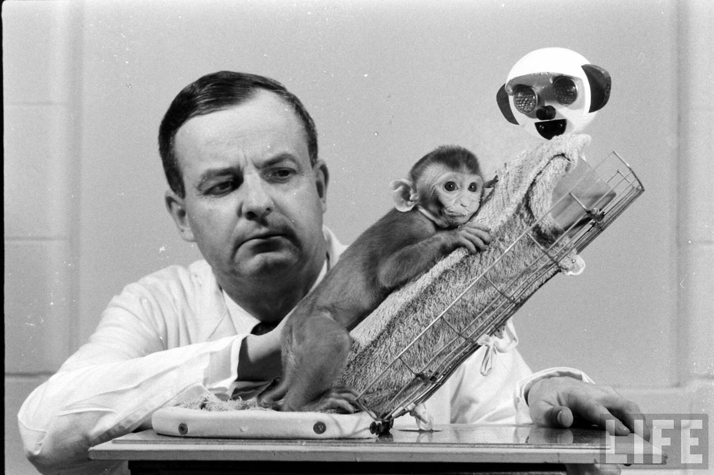

Your browser doesn't support the features required by impress.js, so you are presented with a simplified version of this presentation.
For the best experience please use the latest Chrome, Safari or Firefox browser.
A free Monkey is a Happy Monkey !
Effects of cage confinement & social isolation on monkeys
Behavioural studies/Mental health
Ethical concerns
Legal aspects
Effects of cage confinement & social isolation on monkeys

most subjects typically assume a hunched position
in a corner of the bottom of the apparatus.
One might presume at this point that they find their situation to be hopeless. - Harlow
Stephen J. Suomi, another of Harlow's doctoral students, placed some monkeys in the chamber in 1970
for his PhD. He wrote that he could find no monkey who had any defense against it.
Even the happiest monkeys came out damaged. He concluded that even a happy, normal
childhood was no defense against depression
More and more studies
Ethical concerns
skipping it.... I request you to think over it...
Legal Implications
The Nilgiri Langur is listed in the schedule-1 of the Wild Life Protection Act 1972 - which makes it illegal to
be displayed or owned
The wayforward
The monkey may be transfered to wild life sanctury ?
Other ideas ?? Please fill this MS-form(scan QR)
This form is only accessible via your sbi email
We shall submit a report to the SBIRD authorities based on your feedback for making arrangements for transferring the monkey to a suitable place.